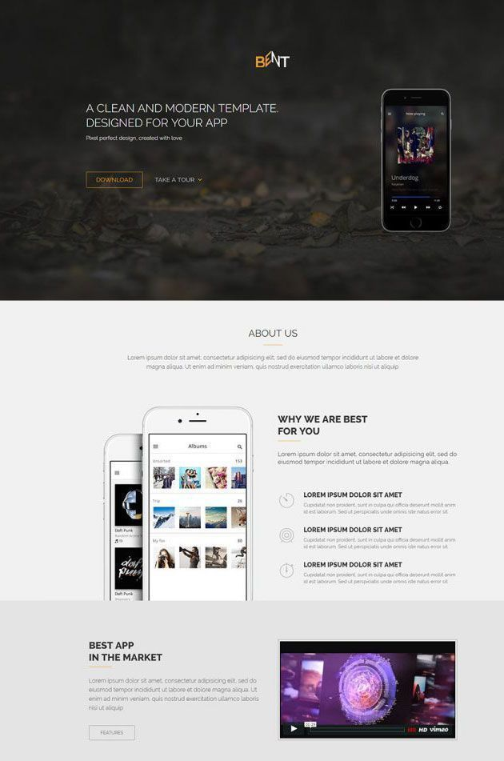
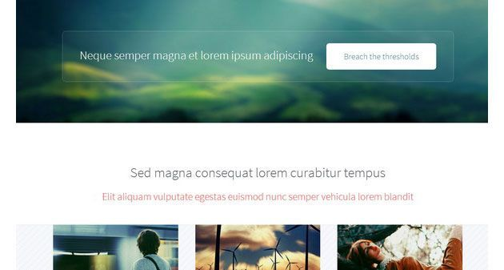
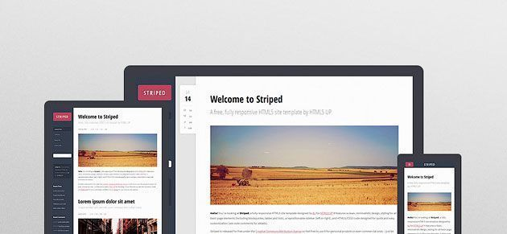
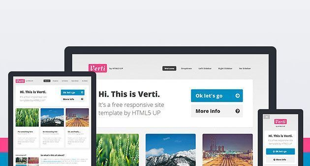

50 Бесплатных Шаблонов Сайтов на HTML5 и CSS3
14.02.2017 Бесплатные шаблоны сайтов 444503 66 комментариев
Свежие бесплатные шаблоны сайтов 2017 г. на HTML5 и CSS3. Любой шаблон html5 css3 можно скачать как для личного пользования, так и для коммерческих проектов. Тематика шаблонов самая разная. Здесь и шаблоны портфолио, шаблоны корпоративных сайтов, лендинги (целевые страницы), шаблоны сайтов услуг, шаблоны блогов и фотогалерей. См. также HTML шаблоны на русском.
Все представленные шаблоны для своего сайта построены на современных версиях HTML5 и CSS3. Кроме того, авторы применяют такие модные фишки, как плоский дизайн, отзывчивый дизайн, адаптивная верстка, слайдеры на jQuery, анимация на CSS3 и пр. То есть, если вы ищете шаблон мобильного сайта, то можете выбрать любой из представленных. Красивые html5 шаблоны 2017, хоть и бесплатны, но выглядят на уровне премиум-класса.
Здесь вы найдете более 50 бесплатных адаптивных шаблонов сайтов высокого качества на HTML5 и CSS3, которые можно использовать как для новых сайтов, так и для переделки уже существующих. Стильные шаблоны сайтов html5 — это то, что вам нужно!
Смотрите также:
50 Бесплатных Шаблонов Сайтов Одностраничников
50 Отличных Бесплатных Премиум Шаблонов WordPress 2017
Обновлено 12.03.2019: Так как статья была написана 2 года назад, то многие ссылки стали битыми. Либо владельцы шаблонов слились, либо поменяли статус шаблонов с бесплатных на платные, либо инопланетяне все похерили. Просьба к вам, уважаемые читатели, если нашли такую ссылку, киньте в комментах, я поправлю.
1. Snow — бесплатный шаблон лендинга на HTML5 и CSS3
Шаблон html5 css3 целевой страницы Snow построен на фреймворке Bootstrap. Шаблон очень стильный и классный! Фиксированный фон и громадный Jumbotron — штука, которая показывает главное содержимое сайта. А что на лендинге самое главное? Правильно, призыв к действию. Естественно, шаблон полностью адаптирован под мобильные устройства. Вы можете использовать его даже в качестве основы для собственных шаблонов.
2. Sima — шикарный коммерческий шаблон сайта
Этот шаблон html5 css3 также построен на фреймворке Bootstrap. Вы можете создать на этом шаблоне уникальный сайт с портфолио, вашей командой, ценами, отзывами и всем другим, что будет необходимо. Например, отлично подойдет этот шаблон для сайта клининговых услуг. Анимация в этом шаблоне плавная и эффектная, чистые и хорошо читаемые шрифты. Просто идеальный шаблон!
3. White — прекрасный шаблон одностраничника!
Отличительная особенность шаблона сайта White — два варианта фона в верхней части. На ваш выбор либо слайдер с картинками, либо видео фон. Очень качественный и эффектный шаблон для сайта!
4. Шаблон сайта наружной рекламы
Шаблон сайта наружной рекламы — это заранее подготовленный вариант будущего сайта, который помогает создать современный веб-ресурс наружной рекламы. Это подготовленный для работы уникальный лендинг пейдж. Все, что останется сделать, скорректировать основной текст, поправить планируемые изображения и логотип, сохранить. Ваш лендинг готов!
5. Mart eCommerce — прекрасный HTML5 и CSS3 шаблон сайта для электронной коммерции
Свежий и стильный дизайн шаблона сайта лучше всего подходит для всех видов модных сайтов, продающих обувь, одежду, часы, аксессуары, спортивную одежду и др. В комплекте идет PSD файл, который вы можете скорректировать под свои нужды.
6. Nava — эффектный HTML5 и CSS3 шаблон для творческих сайтов
Nava представляет собой современный HTML5 шаблон сайта, который используется в основном для творческих профессионалов, которые хотят показать их работу во всей красе. Множество вариаций настроек шаблона позволяет сделать ваш сайт уникальным. Легкий, красивый и отзывчивый шаблон для сайта.
7. Box Portfolio — уникальный творческий шаблон сайта на HTML5 и CSS3
Шаблон сайта Box Portfolio обладает чистым и современным минималистичным дизайном. Отлично подойдет для профессионалов, желающих эффектно показать свои работы в сети. Как следует из названия, шаблон сайта идеально заточен под портфолио.
8. Mountain King — популярный и функциональный HTML5 и CSS3 шаблон сайта
Горная тема в дизайне сайтов очень популярна в последнее время. Шаблон сайта Mountain King не исключение. Включает 336 векторных иконок от Typicons. Плюс великолепная анимация на CSS3. Шаблон отлично подойдет для сайтов о путешествиях и портфолио.
9. Beauty Spa — классный шаблон сайта на HTML5 и CSS3 для спа-салонов
Beauty Spa — отзывчивый шаблон сайта, имеющий множество функций, идеально подходящих для сайтов спа-салонов, оздоровительных или фитнес-центров, сайтов о здоровье или даже парикмахерских. Отличная читаемость шрифтов и ненавязчивый минимализм.
10. Bent – стильный и эффектный лендинг для сайтов на HTML5 и CSS3
Bent — великолепный бесплатный шаблон сайта на html5 и css3. Отзывчивый дизайн, CSS3 анимация, параллакс прокрутка, настраиваемая навигации и прочие вкусняшки. Это чистый дизайн шаблона для сайтов, которые хотят использовать сбалансированную конструкцию, чтобы гарантировать, что посетители будут наслаждаться внешним видом сайта, и в то же время четко видеть его основное содержание.

11. Triangle — бесплатный отзывчивый многоцелевой шаблон на HTML5 и CSS3
Triangle эксклюзивный творческий HTML5 и CSS3 шаблон сайта специально для тех, кто хочет нарулить свой клевый дизайн, но при этом не сделать хуже. В шаблоне есть более 40 предварительно разработанных страниц, которые позволят вам настраивать ваш сайт, как душе угодно.
12. Future Imperfect — блестящий шаблон сайта для творческих людей!
Испытайте подлинное чувство удовольствия с этим шаблоном сайта, идеально подходящим для писателей, авторов, копирайтеров и других работников пера и бумаги. Шаблон можно использовать также для личного блога, блога о путешествиях, о творчестве и пр. Креативный дизайн и адаптивная верстка шаблона понравятся многим.
13. Bodo — прекрасный шаблон для персонального сайта
Bodo — красивый шаблон сайта на HTML5 и CSS3, который идеально подходит для персонального сайта. Особенно для организации портфолио. Чистая и четкая типографика, карусельный слайдер, всплывающие popup окна для показа работ и многое другое.
14. Lens — идеальный HTML5 шаблон сайта для фотографов
Фотографы всегда ищут идеальный шаблон для своего сайта, чтобы показать работы во всей красе, эффектно и самое главное — крупно! Редкий шаблон сайта отвечает этим требованиям. Lens — один из таких шаблонов сайта фотографа.
15. Spectral — уникальный шаблон сайта ручной работы на HTML5 и CSS3
Если вы ищете бесплатные шаблоны сайтов по теме авто тематика, то Spectral будет идеальным решением. Здесь совершенно уникальный дизайн шаблона одностраничного сайта ручной работы. Дизайн можно менять по своему усмотрению. С помощью этого шаблона можно сделать потрясающий сайт абсолютно на любую тему, будь то впечатляющий блог о путешествиях или фотогалерея, сайт автомобильной тематики или хостинг-провайдера.
16. Oxygen — одностраничный HTML5 и CSS3 шаблон сайта
Oxygen — удобный и уникальный шаблон для бизнес сайта. Современный плоский дизайн, адаптивная верстка. Наример, этот шаблон идеально подойдет для сайта о мобильных приложениях или мобильной технике.
17. Mobirise Bootstrap — совершенный бесплатный шаблон сайта на HTML5 и CSS3
Если вы ищете бесплатный шаблон сайта, то Mobirise Bootstrap будет идеален, чтобы начать работу. Это многофункциональный шаблон с массой дополнений в комплекте. Три, предварительно сделанные, макета главной страницы и блога помогут вам в этом. Mobirise Bootstrap также SEO оптимизирован на 100% и адаптирован под любые размеры экранов.
18. La Casa — красивый и бесплатный HTML5 шаблон для сайта недвижимости
Шаблон Brandy прекрасно подойдет для организации коммерческого сайта о недвижимости. Отзывчивый и очень красивый дизайн понравится не только владельцу сайта, но и посетителям.
19. Drifolio — стильный HTML5 шаблон сайта для портфолио
Стильный и анимированный HTML5 и CSS3 шаблон сайта для организации портфолио. Чистый дизайн, отличная типографика, красивые иконки и многое другое.
20. Pluton — яркий и стильный шаблон для одностраничного сайта
Pluton – яркий и эффектный шаблон сайта на Bootstrap. Современный шаблон сайта, с его уникальным одностраничным макетом и адаптивным дизайном, который отлично подходит для студий, фотографов и творческих дизайнеров.
21. SquadFree — профессиональный шаблон одностраничного сайта на HTML5
Шаблон SquadFree отлично подойдет для создания коммерческого одностраничного сайта. Выглядит шаблон не только профессионально, но и адаптирован под все виды экранов. Шаблон собран на основе Bootstrap.
22. Sublime — завораживающий шаблон сайта на HTML5 и CSS3
Sublime — чистый и потрясающе красивый шаблон сайта на HTML5 и CSS3, идеально подходящий для стартапа, креативного агентства или сайта-портфолио. Отзывчивый дизайн и два варианта страниц на выбор.
23. Timber — необычный и красивый HTML5 и CSS3 шаблон сайта
Timber — свежая, стильная и необычная тема шаблона одностраничного сайта. Диагональ — главная фишка дизайна этого шаблона. Шаблон отлично подойдет для бизнес-сайта или портфолио. Есть встроенная галерея, карта и контактная информация, которые вы легко сможете адаптировать под себя.
24. E-Shopper — лучший шаблон сайта для электронной коммерции
E-Shopper — прекрасный вариант шаблона сайта для электронной коммерции. Построен на основе bootstrap с удивительным набором функций для полноценного и эффективного интернет-магазина.
25. Magnetic — бесплатный HTML5 и CSS3 шаблон для фотосайта
Совершенно потрясающий HTML5 и CSS3 шаблон для создания фотосайта или портфолио дизайнера, иллюстратора или художника. Этот шаблон поднимает планку профессиональных шаблонов на новый уровень! Отзывчивый дизайн, отличная поддержка всех видов устройств отображения, легкая и удобная навигация и многое другое.
26. Mabur Portfolio — прекрасный шаблон сайта в стиле минимализма на HTML5 и CSS3
Плоский дизайн этого шаблона сайта в стиле минимализма отлично подойдет для создания портфолио. В шаблоне все детали выверены идеально!
27. Modern Bootstrap HTML5 — бесплатный одностраничный шаблон сайта
Этот бесплатный одностраничник на основе фреймворка Bootstrap прекрасно подойдет для корпоративных сайтов, как для малых компаний, так и для крупных. Плоский дизайн, адаптивная верстка, все элементы дизайна высокого качества. Шаблон представлен в 4 различных цветах.
28. Infusion — стильный одностраничный шаблон сайта на HTML5 и CSS3
Infusion — это прекрасный пример шаблона сайта в стандартах HTML5 и CSS3, который специально разработан для создания бизнес портфолио. Богатая функциональность этого шаблона позволяет эффективно работать с клиентами и привлекать новых.

29. Yebo — корпоративный шаблон сайта на HTML5 и CSS3
Этот высококачественный шаблон сайта в плоском стиле прекрасно подойдет для любого корпоративного сайта. Адаптивный дизайн, масса настроек и возможностей для редактирования.
30. Twenty — эффектный HTML5 и CSS3 шаблон сайта с параллаксом
Этот уникальный и очень красивый шаблон сайта с эффектом параллакса не оставит никого равнодушным. Одностраничный шаблон построен на чистом HTML5 и CSS3 с адаптивной версткой, впечатляющими фонами, поддержкой социальных медиа и пр.
31. Urbanic – отличный HTML5 и CSS3 шаблон сайта на Bootstrap
Urbanic – свежий и классный HTML5 и CSS3 шаблон сайта, построенный на движке Bootstrap. Прекрасно подходит, чтобы сразу начать создавать свой сайт без особых проблем. Шаблон отлично адаптирован под любые размеры экранов.
32. Design Showcase — HTML5 шаблон сайта для портфолио
Визуально гармоничный и эффектный шаблон сайта на HTML5 для организации вашего портфолио. Шаблон прекрасно адаптирован под мобильные устройства, что для сайтов такого формата очень непросто сделать.
33. Mamba One — простой и стильный шаблон сайта на HTML5 и CSS3
Mamba One — это пример простого, но стильного шаблона сайта для создания одностраничника. Совместим со всеми современными браузерами и везде будет отображаться адекватно.
34. KreativePixel — бесплатный шаблон сайта для фотографов
Еще один прекрасный шаблон сайта для фотографов. Отзывчивый дизайн и очень удобная сортировка фоток в портфолио и галереях понравятся многим любителям фотографии. В шаблоне также применен параллакс-эффект, что тоже впечатляет зрителей при просмотре фоток.
35. Retina Ready Responsive App — бесплатный шаблон лендинга на HTML5 и CSS3
Как следует из названия, этот замечательный шаблон сайта не только идеально заточен под целевые страницы, но и отвечает новым мобильным веяниям, особенно в плане четкости отображения на устройствах с Retina дисплеями.
36. Brushed — отзывчивый HTML5 и CSS3 шаблон сайта на движке Bootstrap
Brushed — отзывчивый, бесплатный HTML5 и CSS3 шаблон сайта на основе движка Bootstrap. Также оптимизирован для Retina дисплеев (iPhone, IPAD, IPod Touch и MacBook Pro Retina).
37. Big Picture HTML5 и CSS3 шаблон сайта
Добро пожаловать на Big Picture! Этот адаптивный шаблон сайта на HTML5 прекрасно подойдет всем творческим людям, которым есть что показать, и показать это крупно и эффектно на своем сайте. Кроме того, в шаблоне применена отличная анимация.
38. Tesselatte — бесплатный отзывчивый шаблон на HTML5 и CSS3
Простой шаблон одностраничника, который учитывает все необходимые инструменты для успешного создания сайта. Идеально подойдет для личного блога писателя, копирайтера и просто любителя печатного слова.
39. Overflow — уникальный шаблон сайта на HTML5 и CSS3
Этот уникальный шаблон сайта на чистом HTML5 и CSS3 прекрасно подойдет любому творческому человеку. Он полностью отзывчивый и совершенно бесплатный.
40. Runkeeper — отзывчивый и очень красивый шаблон сайта
Runkeeper — бесплатный, отзывчивый и очень красивый шаблон сайта. Его можно использовать для сайта любой тематики. Блестящий стиль и четкие шрифты, адаптивный дизайн и впечатляющие детали шаблона. Все работает на вас!
41. Pinball Responsive Grid Style — отличный шаблон сайта на основе сетки
Этот замечательный профессиональный шаблон сайта на основе сетки идеально подойдет для корпоративного сайта. Современный плоский дизайн и отзывчивая структура шаблона прекрасно отображается как на экранах больших мониторов, так и мобильных устройств.
42. Prologue — чистый шаблон одностраничного сайта на HTML5 и CSS3
Этот чистый, простой и четкий шаблон сайта на HTML5 и CSS3 прекрасно подойдет для постройки лендинга. Минималистический дизайн не отвлекает от главного. Эффектная боковая панель навигации с прокруткой и четкие линии страницы — просто идеальное сочетание!
43. Helios — современный шаблон сайта на чистом HTML5 и CSS3
Еще один шаблон сайта в стиле минимализма и чистых форм. Специально разработан, чтобы использовать преимущества больших экранов дисплеев, но так же прекрасно адаптирован и под маленькие экраны мобильных устройств.
44. Telephasic — бесплатный и отзывчивый шаблон сайта на HTML5
Этот современный, отзывчивый и абсолютно бесплатный шаблон сайта обладает одним большим преимуществом — он прост и лаконичен, но многим именно этого и не хватает.

45. Strongly Typed — очень красивый шаблон сайта в стиле полу-ретро
Новый шаблон сайта с минималистичным полу-ретро стилем. Просто ретро уже не в моде, а вот легкий намек на него — очень даже кстати. Этот шаблон сайта полностью отзывчивый, построен на чистом HTML5 и CSS3 и включает все необходимые основные элементы страницы. Шаблон Strongly Typed идеально подойдет для сайтов творческой тематики. Например, для сайта о домашнем декоре.
46. Striped — чистый, красивый и функциональный шаблон сайта HTML5 и CSS3
Свежий и чистый, красивый и функциональный, новый шаблон сайта на HTML5 и CSS3. Имеет в своем арсенале все необходимые элементы страниц, в том числе оформленные цитаты, таблицы и списки, а также адаптированный сайдбар (справа или слева — по вашему желанию).

47. Parallelism — необычный и стильный шаблон сайта на HTML5 и CSS3
Parallelism — стильный шаблон сайта для организации портфолио или фотографий. Необычность его в том, что прокрутка здесь не вертикальная, как обычно, а горизонтальная. Это придает сайту особый шик и запоминаемость.
48. Miniport — полностью отзывчивый HTML5 шаблон сайта в стиле минимализма
Отличный шаблон сайта в стиле минимализма на HTML5. Прекрасно подойдет как для личного сайта/блога, так и для небольшого корпоративного сайта одностраничника или в качестве сайта-визитки.
49. Verti — просторный и свободный отзывчивый шаблон сайта на HTML5
Чистый и просторный дизайн этого шаблона сайта прекрасно подойдет для набольших корпоративных сайтов или для коммерческих проектов. Отзывчивый и удобный как для автора, так и для пользователей.

50. ZeroFour — впечатляющий и стильный шаблон сайта на HTML5 и CSS3
Качественный и внешне эффектный шаблон сайта — ZeroFour. Стильный дизайн, очень красивое меню, идеально выверенные формы и кнопки, красивые иконки и многое другое. И все это абсолютно бесплатно!
51. Platz — бесплатный HTML5 шаблон сайта на основе сетки
Современный, визуально привлекательный HTML5 шаблон сайта, разработанный на основе сетки (подробнее о сетке читайте здесь). Красивый и отзывчивый дизайн шаблона для блога или сайта.
Надеюсь, вы нашли для себя что-то подходящее среди этих замечательных шаблонов сайтов на HTML5 и CSS3. Удачи!
Добавьте в закладки, чтобы потом быстро найти.
�